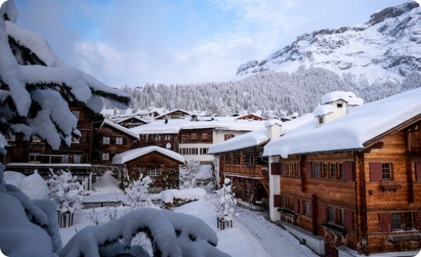
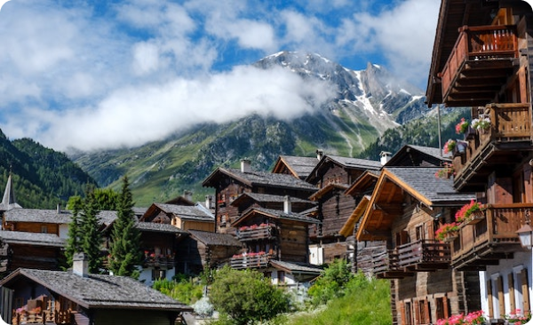

Welcome To Your Next Adventure!
Nestled in the heart of the Swiss Alps, Edelweiss Bliss is more than just a resort. It’s a destination for
those who seek the thrill of nature, the beauty of culture, and the comfort of luxury. Whether you want to ski
on the slopes, hike on the trails, or relax in the spa, Edelweiss Bliss has something for everyone.
Escape to Edelweiss Bliss!
Winter wonderland at Edelweiss Bliss!
Are you ready for a vacation that will leave you breathless? Then pack your bags and head to Edelweiss Bliss,
the ultimate Swiss resort that offers everything you need for an unforgettable adventure. Whether you’re
looking for adrenaline, romance, or relaxation, you’ll find it at Edelweiss Bliss. Here are some of the
reasons why you should book your stay today:
Experience the thrill of skiing on some of the best slopes
in Europe, with stunning views of the Alps and the village.
Explore the rich culture and history of
Switzerland, with guided tours of museums, castles, and landmarks.
Indulge in the finest cuisine and
beverages, with authentic German dishes, local wines, and craft beers.
And more...
If you’re dreaming of a white Christmas, look no further than Edelweiss Bliss, the ultimate Swiss resort that
will make your holiday season magical. Imagine waking up in a cozy chalet, surrounded by snow-covered
mountains and trees. Imagine spending your days skiing, snowboarding, or sledding on the slopes, with the
crisp air and the sun shining on your face. Imagine relaxing in the evening, with a hot chocolate or a mulled
wine, by the fireplace or in the hot tub. Imagine celebrating Christmas Eve, with a festive dinner, live
music, and fireworks. Imagine all this and more at Edelweiss Bliss. Book your stay today and get ready for a
winter wonderland. Edelweiss Bliss is where your dreams come true.

